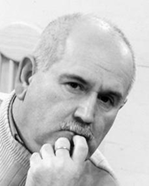

ВМЕСТЕ С СОВЕТСКОЙ ИМПЕРИЕЙ РУХНУЛ И МИФ О КАВКАЗЕ
С распадом Советского Союза кардинальным образом изменилась геополитическая ситуация в мире, что повлекло за собой множество проблем, породило новые вызовы
и угрозы национальной безопасности государств. Актуальным представляется исследование современного развития ситуации
на Южном Кавказе
– геополитическом регионе
с высоким конфликтным потенциалом.
Южный Кавказ традиционно являлся узловым пунктом пересечения интересов и противоречий различных сил, военно-политических силовых центров и сверхдержав. Это обстоятельство, несомненно, оставило свой след на процессе исторического развития государств региона.
История Кавказа – хроника трагедии кавказцев, является историей борьбы великих держав и цивилизаций за раздел и передел сфер влияния в этом регионе мира.
В этом смысле, по своей географии, культуре, истории, демографическому составу и другим факторам, определяющим среду безопасности, Южный Кавказ является своеобразным регионом - перекрёстком различных этнических групп, религий, культур, цивилизаций, международных транспортных путей.
Вместе с советской империей рухнул и миф о Кавказе: гостеприимство обернулось этническими чистками, мудрость гор - варварскими межнациональными столкновениями, многовековые добрососедские отношения трансформировались в уродливую форму внутрикавказского этнического империализма.
На сегодня практически отсутствуют цивилизованные правовые формы и механизмы разрешения зловещего противоречия, доставшегося нам от прошлого и особенно от уходящего 20 века - противоречие между принципом суверенитета, территориальной целостности государств и правом наций на самоопределение.
Кавказские народы оказались меж двух огней - так называемым международным, а, по сути, межгосударственным правом и правами человека. Они остались один на один со своими спорами, но без приемлемого правового механизма и процедуры их разрешения. Кавказ превратился в средневековую Европу – гладиаторскую арену междоусобных и локальных войн, межнациональных и межконфессиональных конфликтов. Между тем, многие региональные проблемы можно разрешить, если не будут противопоставляться право наций на самоопределение и принцип территориальной целостности. Именно такое противопоставление, в конце концов, рождает возможность военного решения конфликтов.
Нужно действовать, активизировать усилия на всех уровнях, попытаться использовать все ранее неиспользованные возможности. Выжидательная позиция не только вредна, но и опасна. В современном мире одна лишь надежда на боеспособность армии недостаточна для обеспечения безопасности и ускоренного развития страны. Проблемы национальной безопасности не ограничиваются военной сферой, а охватывают почти все стороны жизни страны в тесной взаимосвязи и взаимодействии.
В нынешнем неустойчивом и во многом непредсказуемом мире от таких факторов, как демократия, степень развитости гражданского общества, эффективность взаимодействия институтов государства и общества зависят мир и стабильность в нашем регионе.
Построение демократического общества является одной из наиболее актуальных и обсуждаемых на сегодня тем в регионе Южного Кавказа. Понятно, что без настоящей демократии, без создания подлинного гражданского общества невозможно интегрироваться в европейские и мировые процессы.
Многие придерживаются и того мнения, что настоящая демократизация, системные изменения в обществах, при которых будут превалировать права и свободы гражданина, будут содействовать разрешению межгосударственных конфликтов.
Что же нужно для того, чтобы освободиться от стереотипного образа врага, трансформировать восприятие конфликта и настроить общества на конструктивный лад? На мой взгляд, в первую очередь необходим отказ от информационных технологий, искажающих суть конфликтов. Существует множество стереотипов, которые нужно устранить. Нельзя использовать ситуацию в пропагандистских целях.
Для достижения этого считаю важным взаимные посещения, проявление интереса к внутренней жизни соседнего государства, знание реальных настроений в обществах, поскольку все, что преподносится средствах массовой информации, часто исходит лишь из интересов местной политической элиты.
Для того, чтобы примирение стало возможным, необходимы отказ от пропаганды образа врага, осознание прошлого и травмы, связанной с ним. Существует потребность излить горе, посочувствовать, извиниться друг перед другом за боль, которая в свое время была причинена. Следует отказаться от взаимных обвинений и попробовать понять друг друга.
Людей необходимо шаг за шагом приучать к толерантности, отказу от деструктивных, а по сути, нереальных способов решения конфликтов.
Между тем это необходимо для того, чтобы попытаться смягчить все усугубляющуюся атмосферу недоверия между обществами сторон конфликта. Именно посредством подобных шагов может быть восстановлено по крупицам доверие, что является основой для урегулирования любого конфликта.
За признанием травмы прошлого и обоюдно причиненной боли можно естественным образом придти к общему видению будущего и совместному поиску путей решения проблемы. Рано или поздно, президенты подпишут Мир, а выполнять пункты, указанные в документе, должны будут не главы государств, а сами народы. К сожалению, власти сторон конфликта не ведут работы по развеиванию образа врага, не готовят народы к примирению, к тому, что будут компромиссы, не совсем популярные в обществах решения. Все происходит наоборот: одна сторона заявляет о готовности решить вопрос военным путём, другая – о решимости дать отпор и т.д. Между тем мы упускаем драгоценное время, и в сложившейся ситуации время играет против всех нас. Ведь уже выросло поколение молодых людей, которые не знают, кто такие армяне и кто такие азербайджанцы. Это поколение, не видевшее ужасов войны, фактически является «сырым материалом», пластилином в руках скульптора, в данном случае государства, которое лепит нужную ему фигуру, иными словами, агрессивную молодёжь. Эта молодёжь готова из «патриотических» побуждений взять в руки оружие. Между тем необходимо провести грань между патриотизмом и национализмом, ибо часто человек, общество незаметно переходят данную грань.
Чтобы не допустить подобного, неправительственные организации должны работать с различными слоями населения, объяснять им, что по ту сторону баррикады живут такие же люди, как и они, что у них такие же проблемы, радости и горести. Тем более, что у нынешней молодёжи практически нет опыта совместного проживания.
В данном плане практически неиспользованным является потенциал социальных групп, пострадавших в результате конфликта (семьи погибших, беженцы, инвалиды и ветераны). А ведь у них имеется большой миротворческий ресурс, ибо перенесшие на себе ужасы и лишения войны люди наиболее остро чувствуют необходимость мирного разрешения конфликта. Здесь необходимы совместные проекты, освещение в СМИ положительного опыта.
К процессу примирения обязательно необходимо подключить беженцев, которые родились и жили на противоположной стороне, имеют опыт совместного проживания и, вероятнее всего, они легче пойдут на контакты и диалог.
Также нужно подключить и старейшин, аксакалов, которые за свою жизнь повидали многое и могут внести свою лепту в миротворческий процесс. Нужно вспомнить всё то хорошее, что было между армянами и азербайджанцами, грузинами, абхазами и осетинами. Мы соседи, и от этого никуда не денешься. ибо понимают, что в ней не будет победителей, и все стороны конфликта окажутся в проигрыше.
Войны в нашем регионе, послевоенный синдром и практически продолжающееся военное положение стали серьезным препятствием для построения в государствах Южного Кавказа открытых демократических обществ. Постконфликтное общество прежде всего отличается незалеченными ранами, комплексом нерешенных социально-экономических, бытовых и других проблем широких слоев населения. Все это накладывает отпечаток на сознание, общественную позицию граждан. Поэтому необходимо отказаться, отойти от многих стереотипов и штампов, быть более открытыми, не бояться признавать ошибки прошлого и попытаться исправить их.
Альберт Восканян
23-05-10
История Кавказа – хроника трагедии кавказцев, является историей борьбы великих держав и цивилизаций за раздел и передел сфер влияния в этом регионе мира.
В этом смысле, по своей географии, культуре, истории, демографическому составу и другим факторам, определяющим среду безопасности, Южный Кавказ является своеобразным регионом - перекрёстком различных этнических групп, религий, культур, цивилизаций, международных транспортных путей.
Вместе с советской империей рухнул и миф о Кавказе: гостеприимство обернулось этническими чистками, мудрость гор - варварскими межнациональными столкновениями, многовековые добрососедские отношения трансформировались в уродливую форму внутрикавказского этнического империализма.
На сегодня практически отсутствуют цивилизованные правовые формы и механизмы разрешения зловещего противоречия, доставшегося нам от прошлого и особенно от уходящего 20 века - противоречие между принципом суверенитета, территориальной целостности государств и правом наций на самоопределение.
Кавказские народы оказались меж двух огней - так называемым международным, а, по сути, межгосударственным правом и правами человека. Они остались один на один со своими спорами, но без приемлемого правового механизма и процедуры их разрешения. Кавказ превратился в средневековую Европу – гладиаторскую арену междоусобных и локальных войн, межнациональных и межконфессиональных конфликтов. Между тем, многие региональные проблемы можно разрешить, если не будут противопоставляться право наций на самоопределение и принцип территориальной целостности. Именно такое противопоставление, в конце концов, рождает возможность военного решения конфликтов.
Нужно действовать, активизировать усилия на всех уровнях, попытаться использовать все ранее неиспользованные возможности. Выжидательная позиция не только вредна, но и опасна. В современном мире одна лишь надежда на боеспособность армии недостаточна для обеспечения безопасности и ускоренного развития страны. Проблемы национальной безопасности не ограничиваются военной сферой, а охватывают почти все стороны жизни страны в тесной взаимосвязи и взаимодействии.
В нынешнем неустойчивом и во многом непредсказуемом мире от таких факторов, как демократия, степень развитости гражданского общества, эффективность взаимодействия институтов государства и общества зависят мир и стабильность в нашем регионе.
Построение демократического общества является одной из наиболее актуальных и обсуждаемых на сегодня тем в регионе Южного Кавказа. Понятно, что без настоящей демократии, без создания подлинного гражданского общества невозможно интегрироваться в европейские и мировые процессы.
Многие придерживаются и того мнения, что настоящая демократизация, системные изменения в обществах, при которых будут превалировать права и свободы гражданина, будут содействовать разрешению межгосударственных конфликтов.
Что же нужно для того, чтобы освободиться от стереотипного образа врага, трансформировать восприятие конфликта и настроить общества на конструктивный лад? На мой взгляд, в первую очередь необходим отказ от информационных технологий, искажающих суть конфликтов. Существует множество стереотипов, которые нужно устранить. Нельзя использовать ситуацию в пропагандистских целях.
Для достижения этого считаю важным взаимные посещения, проявление интереса к внутренней жизни соседнего государства, знание реальных настроений в обществах, поскольку все, что преподносится средствах массовой информации, часто исходит лишь из интересов местной политической элиты.
Для того, чтобы примирение стало возможным, необходимы отказ от пропаганды образа врага, осознание прошлого и травмы, связанной с ним. Существует потребность излить горе, посочувствовать, извиниться друг перед другом за боль, которая в свое время была причинена. Следует отказаться от взаимных обвинений и попробовать понять друг друга.
Людей необходимо шаг за шагом приучать к толерантности, отказу от деструктивных, а по сути, нереальных способов решения конфликтов.
Между тем это необходимо для того, чтобы попытаться смягчить все усугубляющуюся атмосферу недоверия между обществами сторон конфликта. Именно посредством подобных шагов может быть восстановлено по крупицам доверие, что является основой для урегулирования любого конфликта.
За признанием травмы прошлого и обоюдно причиненной боли можно естественным образом придти к общему видению будущего и совместному поиску путей решения проблемы. Рано или поздно, президенты подпишут Мир, а выполнять пункты, указанные в документе, должны будут не главы государств, а сами народы. К сожалению, власти сторон конфликта не ведут работы по развеиванию образа врага, не готовят народы к примирению, к тому, что будут компромиссы, не совсем популярные в обществах решения. Все происходит наоборот: одна сторона заявляет о готовности решить вопрос военным путём, другая – о решимости дать отпор и т.д. Между тем мы упускаем драгоценное время, и в сложившейся ситуации время играет против всех нас. Ведь уже выросло поколение молодых людей, которые не знают, кто такие армяне и кто такие азербайджанцы. Это поколение, не видевшее ужасов войны, фактически является «сырым материалом», пластилином в руках скульптора, в данном случае государства, которое лепит нужную ему фигуру, иными словами, агрессивную молодёжь. Эта молодёжь готова из «патриотических» побуждений взять в руки оружие. Между тем необходимо провести грань между патриотизмом и национализмом, ибо часто человек, общество незаметно переходят данную грань.
Чтобы не допустить подобного, неправительственные организации должны работать с различными слоями населения, объяснять им, что по ту сторону баррикады живут такие же люди, как и они, что у них такие же проблемы, радости и горести. Тем более, что у нынешней молодёжи практически нет опыта совместного проживания.
В данном плане практически неиспользованным является потенциал социальных групп, пострадавших в результате конфликта (семьи погибших, беженцы, инвалиды и ветераны). А ведь у них имеется большой миротворческий ресурс, ибо перенесшие на себе ужасы и лишения войны люди наиболее остро чувствуют необходимость мирного разрешения конфликта. Здесь необходимы совместные проекты, освещение в СМИ положительного опыта.
К процессу примирения обязательно необходимо подключить беженцев, которые родились и жили на противоположной стороне, имеют опыт совместного проживания и, вероятнее всего, они легче пойдут на контакты и диалог.
Также нужно подключить и старейшин, аксакалов, которые за свою жизнь повидали многое и могут внести свою лепту в миротворческий процесс. Нужно вспомнить всё то хорошее, что было между армянами и азербайджанцами, грузинами, абхазами и осетинами. Мы соседи, и от этого никуда не денешься. ибо понимают, что в ней не будет победителей, и все стороны конфликта окажутся в проигрыше.
Войны в нашем регионе, послевоенный синдром и практически продолжающееся военное положение стали серьезным препятствием для построения в государствах Южного Кавказа открытых демократических обществ. Постконфликтное общество прежде всего отличается незалеченными ранами, комплексом нерешенных социально-экономических, бытовых и других проблем широких слоев населения. Все это накладывает отпечаток на сознание, общественную позицию граждан. Поэтому необходимо отказаться, отойти от многих стереотипов и штампов, быть более открытыми, не бояться признавать ошибки прошлого и попытаться исправить их.
Альберт Восканян
23-05-10